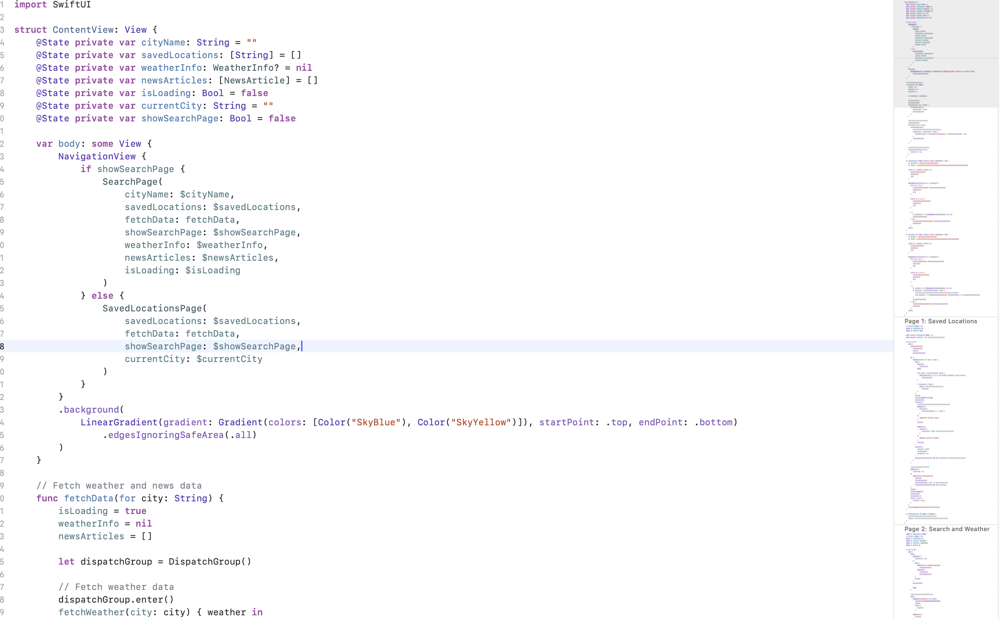
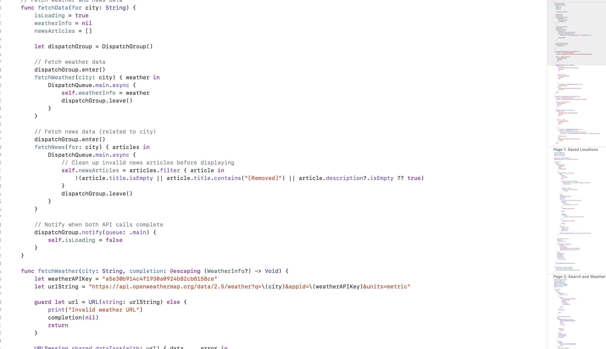
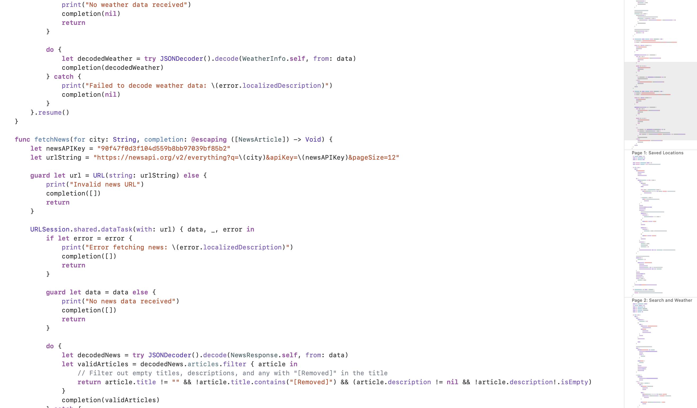

Additional Work

Picture 1

Picture 2

Picture 3
Video
Building a Weather App with API Integration
Creating a weather app involves fetching real-time weather data from an external API and presenting it to users in a clear and visually appealing manner. By leveraging APIs like OpenWeather or WeatherAPI, developers can access a vast array of data, including temperature, humidity, forecasts, and weather conditions, making it possible to build a feature-rich and dynamic application.
Key Steps in Development
- Choosing a Weather API: Select a reliable API that provides the required data. Factors to consider include available endpoints, data formats (e.g., JSON or XML), request limits, and cost for usage tiers.
- Setting Up API Access: Register for an API key, which acts as a unique identifier for authentication. Ensure the key is stored securely, typically in environment variables, to prevent unauthorized access.
- Integrating the API: Use HTTP requests to fetch data from the API. Most APIs provide endpoints for current weather, hourly and daily forecasts, and geographic-based queries.
- Data Parsing and Presentation: Once the API response is received (usually in JSON format), parse the data and display it in a user-friendly layout, such as a dashboard showing temperature, conditions, and icons representing weather types.
Handling Challenges
- Error Management: APIs may occasionally fail due to network issues or exceeded request limits. Implement error handling to display meaningful messages to users, such as "Unable to retrieve data. Please try again later."
- Performance Optimization: Minimize API calls by caching frequently requested data, especially for static locations. This reduces response times and avoids exceeding request limits.
- Localization: Many APIs support multiple languages for weather descriptions. Use this feature to enhance the app’s accessibility for a global audience.
Example Workflow
Here’s a simplified example of how a weather app fetches and displays data:
func fetchWeather(for location: String) {
let apiKey = "YOUR_API_KEY"
let url = "https://api.weatherapi.com/v1/current.json?key=\(apiKey)&q=\(location)"
URLSession.shared.dataTask(with: URL(string: url)!) { data, response, error in
guard let data = data, error == nil else {
print("Error fetching data: \(error?.localizedDescription ?? "Unknown error")")
return
}
do {
let weatherData = try JSONDecoder().decode(WeatherResponse.self, from: data)
DispatchQueue.main.async {
self.displayWeather(weatherData)
}
} catch {
print("Error parsing data: \(error.localizedDescription)")
}
}.resume()
}
Design Considerations
- Intuitive Interface: Use weather icons, graphs, and animations to make the data visually engaging.
- Location Services: Enable GPS functionality to automatically fetch weather for the user's current location.
- Customization: Allow users to save favorite locations or toggle between temperature units (Celsius/Fahrenheit).
Conclusion
Developing a weather app using an API provides an excellent opportunity to explore real-time data integration. By focusing on error handling, performance, and user experience, developers can create an app that is not only functional but also engaging and user-friendly.